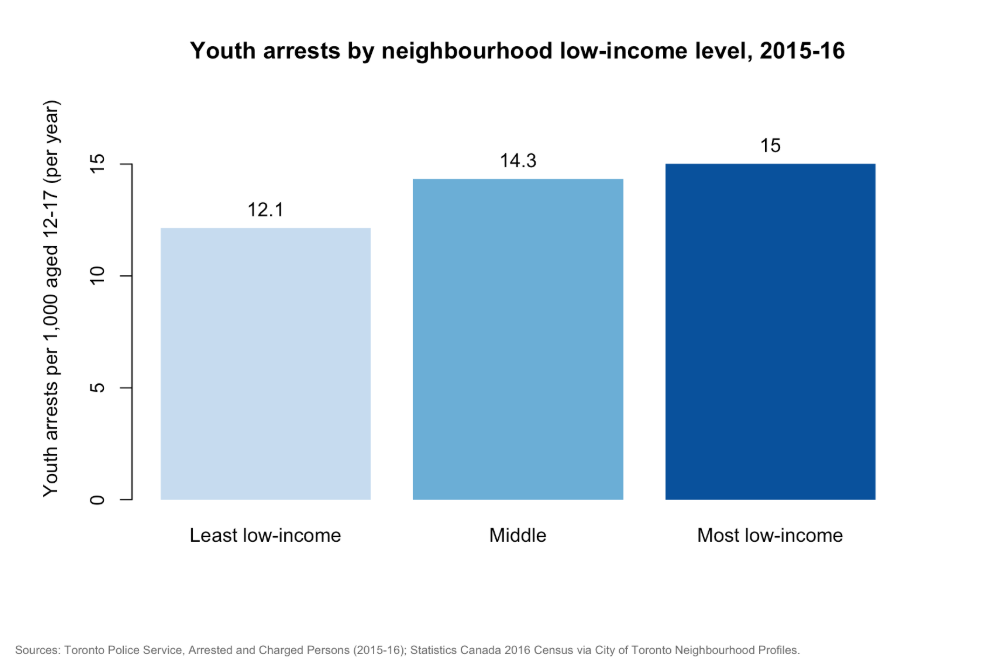
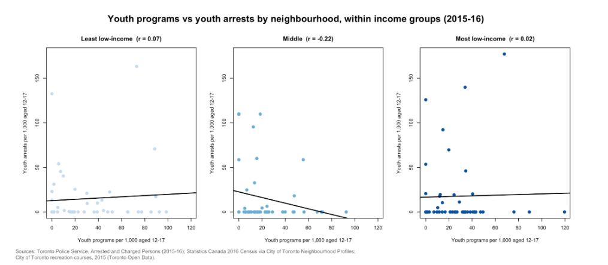
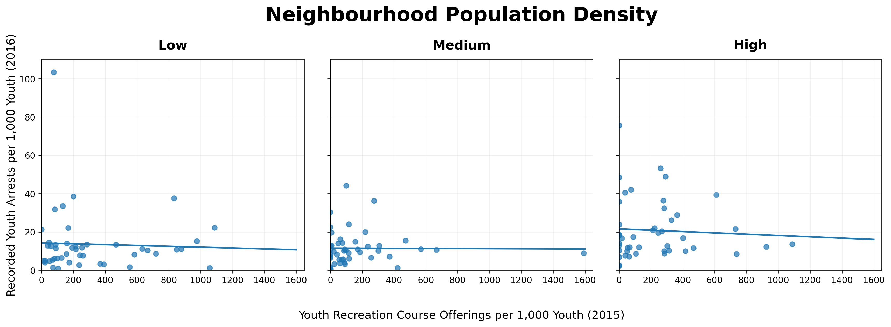
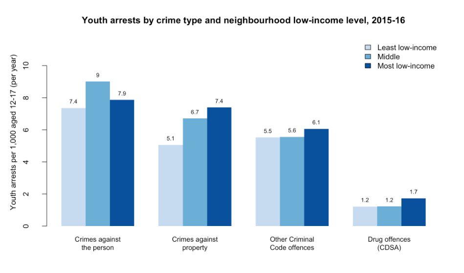

Do neighbourhoods with more recreation opportunities for young people experience fewer recorded youth arrests?
Recreation programs can offer opportunities for movement, community, and skill development. But how do those opportunities relate to Toronto's uneven geography of youth arrests? We explore the city neighbourhood by neighbourhood—and consider income, density, and the kinds of offences being recorded.
Image source: City of Toronto
01 / Reading the city
Recreation availability and youth arrest rates
Start with Toronto's recorded youth arrest rates. As you scroll, each successive kind of recreation program appears on the same map—without changing the geography or zoom.
Camps & supervised activities
01 / 05
Camps & supervised activities
Structured camps are one kind of youth recreation opportunity. They bring young people together through supervised activities, often during school breaks.
[Add your commentary on camps, their purpose, and their geographic distribution.]
02 / 05
Skills, leadership & community
We now add skills, leadership, and community activities. These programs may offer opportunities for learning and social connection beyond sports.
[Add examples or observations about the distribution of these programs.]
03 / 05
Arts & culture
Arts and culture programs expand the range of youth activities available. The new dots show where creative opportunities overlap with other recreation types.
[Add your description of arts and culture activities.]
04 / 05
Aquatics
Swimming and other aquatic activities add another layer of recreation opportunities across Toronto.
[Explain what stands out about aquatic program locations.]
05 / 05
The complete picture
With all five categories visible—including sports and fitness—we can compare the locations of youth programs with the neighbourhoods that have higher and lower recorded youth arrest rates.
Can we see a link between recreation program location and youth arrest rates?
What the map can—and cannot—tell us
Being nearby is not the same as having access.
These dots represent locations offering recreation courses, while the choropleth depicts recorded youth arrest rates. Several types of courses can be offered at the same facility, causing dots to overlap. Geography provides a starting point, but simply being located nearby does not tell us whether a young person attended a program.
[Replace with your longer explanation or a transition from the program categories to total course availability.]
02 / From places to programming
How much programming is offered?
A closer look
Not all facilities offer the same amount.
Here, larger circles represent facilities with more youth recreation course offerings across all five categories.
Do more courses correspond with fewer arrests?
Compare large course concentrations with neighbourhoods shaded darker for higher recorded youth arrest rates. The visual relationship is not immediately straightforward.
[Add your observations on high- and low-program areas from the map.]
A question of availability
Course offerings are only one measure of opportunity.
Facility locations and course counts can reveal patterns in the distribution of programming, but they do not measure who participated, how many spaces were available, or how far young people travelled to attend.
03 / Neighbourhood circumstances
Exploring income
Does neighbourhood income explain where recreation centres are located—or where recorded youth arrests are most common?
Income across the city
Uneven economic conditions
In some Toronto neighbourhoods, fewer than 5% of residents live in low-income households; in others, the share exceeds 45%.
The highest rates appear in the inner northwest, northern and central Scarborough, and parts of the downtown core. Lower rates appear in parts of central North York and Etobicoke.
Recreation programs across income levels
Youth recreation programs appear across neighbourhoods at different income levels. The points overlap where facilities provide multiple kinds of programming.
But does neighbourhood income help explain the location of recreation centres—or youth arrest rates?
From map to measurement
Where poverty is concentrated, do arrest rates rise?
We divide Toronto's historical neighbourhoods into thirds according to their share of low-income households and compare recorded youth arrest rates.
Chart / Income
Youth arrests by neighbourhood low-income level

We split Toronto's 140 neighbourhoods into thirds by their share of low-income households. The graph shows that youth arrest rates rise steadily across the three groups: from 12.1 per 1,000 residents aged 12–17 in the least low-income neighbourhoods to 15 in the most low-income neighbourhoods.
Income clearly matters in this descriptive comparison, but the gap is modest. This leaves room to investigate other factors, including recreation-program availability, without assuming that either one causes the observed differences.
Chart / Within income groups
Does the recreation–arrest relationship change with income?

The scatterplots show each neighbourhood individually, where each dot represents one neighbourhood. They allow us to look at the association between recreation availability and youth arrests separately within neighbourhoods with similar socioeconomic conditions.
[Add your interpretation of the three income-group trends after confirming that the chart uses the same recreation measure as the density analysis.]
04 / Another possible explanation
Exploring population density
Beyond income, might the density of a neighbourhood change how recreation availability relates to recorded youth arrests?
Grouped by income

Grouped by population density
Two ways to compare
Income and density, side by side
These plots compare the relationship between 2015 youth recreation availability and 2016 recorded youth arrest rates within neighbourhood groups.
[Add a brief transition from the income analysis to density.]
Does density reveal a different pattern?
Across low-, medium-, and high-density neighbourhoods, the recreation–arrest correlations in the density panels are close to zero. Grouping neighbourhoods by density does not reveal a clear inverse linear relationship.
What this comparison cannot establish
These are observational relationships, not tests of causation. Grouping neighbourhoods by population density or income also does not fully account for the many other factors that could affect arrests and program participation.
05 / Beyond an overall rate
Does the type of offence matter?

Not all youth crime follows the same pattern. Property crime follows poverty most clearly. Crimes against the person are the most common in the chart, but do not rise steadily. Drug and other Criminal Code offences are only slightly higher in the most low-income neighbourhoods.
If youth programs reduce crime by keeping young people engaged, we might expect a clearer association for opportunity-related offences. However, offence type alone does not identify whether an incident happened in a public space.
06 / Bringing the evidence together
The geography of two variables
When we look at recreation availability and arrest rates simultaneously, which neighbourhood combinations stand out?
Bivariate map
One neighbourhood, two measures
Each colour represents a combination of youth program availability and recorded youth arrest rates. Some neighbourhoods have high programming and low arrests, while others have high values of both.
A relationship without a simple pattern
The map highlights why program availability cannot be treated as a straightforward predictor of arrest rates. Similar recreation levels can occur alongside very different outcomes.
[Add specific neighbourhood examples or observations from the bivariate map.]
07 / Conclusion
What can we conclude about recreation and youth arrests?
The maps and charts invite us to examine whether more youth recreation availability corresponds with fewer recorded youth arrests. Across Toronto, the descriptive association does not appear simple or consistent.
Neighbourhood income and density add important context, but the number of available courses alone cannot explain differences in arrest rates. Program availability does not measure attendance, actual access, or program effectiveness.
[Replace this provisional conclusion with your final interpretation and a forward-looking question for Toronto.]
Sources
01
Historical Recreational Courses
City of Toronto Open Data · 2015 · youth-eligible course offerings, program types and locations.